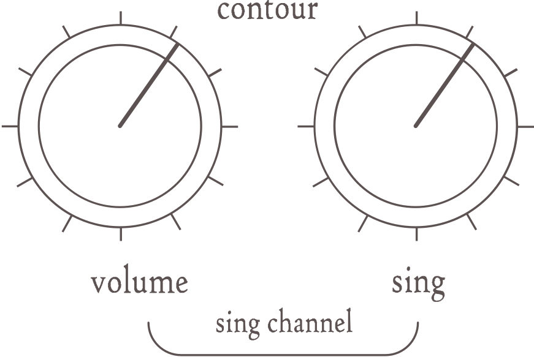

Overview
Stratosphere Sing&Drive has two channels-one is booster (Sing channel) witch gives you a Dumble SSS tone,
the other
one is overdrive (Drive channel).
Every channel can work independently, or both channels can work together. Now comes the cool part! You can
switch
the positions of both channels only by the flick of one switch which gives you the order you want.
For instance, you can put the Drive channel first in the chain, so you can first clip the signal and then
give em
the right amount of volume and headroom using the "Sing" channel.Other cool setup is to switch off the
clipping
of the "Drive channel" ( via internal dip two switches) and put the "Sing" channel first on the line- this
way
you first shape your tone with the Dumble SSS simulation and then give it a little edge with the "Drive"
channel,
but with a headroom unmatched with nothing else (exept true tube amp). This is what we call - Dumble ODS
settings(
with both clipping options turned off).
This pedal gives you so many ways to shape you tone. You can use the high cut of the "Drive" channel
together with
the contour of the "Sing" channel ( witch shapes the mid frequencies of your guitar) to nail almoust every
tone
you like . Also you have two clipping options for the Drive channel selectable using two dip switches
inside
the pedal( you have to open the back plate).
As you can see this is very versatile effect pedal, witch gives you all the tools in your hands to bring
your tone
online, no matter what guitar or amp you're using.
We're proud to call this pedal channel strip and you can find out why if you try it!
Drive Channel

Yes, that red indicator light shows that you've released the beast. Just kidding, this overdrive is miles
away from any distortion. This is a very transparent and delicate overdrive with enough gain to hit hard,
when that's the case.
You can use it alone or blend it with the "Sing" channel very easily and effortlessly.
It is as if you have four different presets available with the Stratosphere Sing&Drive channelstrip by
using the channels separately, and combining them in different order.
Things go even further when you put both clipping options of the "Drive" channel in the equation. They are
selectable via two mini switches inside the pedal, each one bringing different color and "compression".
They can be used separately, together on, or both turned off( realy nice set up for Dumble ODS tones in
conjunction with the "Sing" channel first in line).
The idea of Stratosphere's "Drive" channel is to give you all the tools needed to compliment your tone. You
have Volume, Gain, Tone- which is high-frequency cut type(different from the contour of the "Sing" channel)
and two clipping options, which can be disabled completely if you want more headroom.
The big strength of Stratosphere Sing&Drive channelstrip is that every guitarist can become
the real architect of his own tone. You don't need to be an engineer to do it, it's very intuitive- just
play with the options to find your favorites.
Sing Channel

Obviously "Sing" comes from the idea of Dimble SSS(Steel String Singer). This channel is meant to add just
the right amount of gain to your sound to make it sing, without making it compressed and overdriven. You
can use this channel for your clean, but still juicy and articulate solo and rhythm parts. There are so
many situations when you need more color and eq control and maybe just a bit more saturation, while keeping
your sound clean and uncompressed. Stratosphere's Sing channel is perfect for this application.
With the Stratosphere's "Sing" channel you will have a "sing" control, which functions like gain, but more
delicate, as well as volume and very cool contour control, which gives you access to your fundamental
middle frequencies.You can think of the contour control like eq for your middle frequencies.
The whole idea of the Sing&Drive channel strip is to build up your gain structure.
That's why both channels introduce different amount of gain ,equalization and clipping options,which gives
you all the tools needed to build up your sound. And given the fact, that you have access to the order of
the channels( which one comes first in line) with the switch on top of the pedal, you can experience the
whole spectrum of gain structures and tones, including Dumle ODS sounds!
${require("../footer/footer.html")}